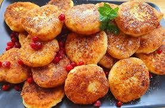
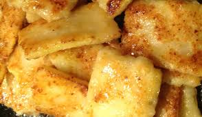
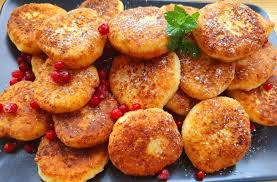
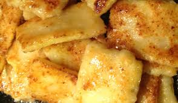

.jpg) |
 |
|  | .jpg) |
Avots: https://receptes.tvnet.lv/recepte/13039-biezpiena-pankukas
1. Olas sakuļ ar sāli un cukuru, pielej 3/4 paredzētā piena daudzuma. Šķidrumu pa daļām lej bļodā iesijātos miltos un maisa. Atlikušo pienu, samaisa un atstāj 25-30 minūtes, lai milti uzbriest..
2. Pildījums: biezpienu samaisa , pievieno cukuru, sāli, olu, garšvlieas un miltus visu samaisa.Vājpiena biezpienam pievieno krējumu, saldajam biezpienam ja ir vēlme - noskalotas, uzbriedinatas rozīnes
3. No sagatavotās mīklas cep plānās pankūkas no vienas puses, liek uz koka dēlīša vai lēzenās šķīvja ar apcepto pusi uz augšu.
4. Uz pankūkas apceptās puses vienā malā liek pildījumu, pārloka tam pāri abas sānu malas un saloka.
5. Pēc tam pildītās pankūkas liek sakarsētās taukvielās un cep, līdz tās ir dzetlenīgas brūnas.
|
 |
|  | |
Avots: https://receptes.tvnet.lv/recepte/13039-biezpiena-pankukas